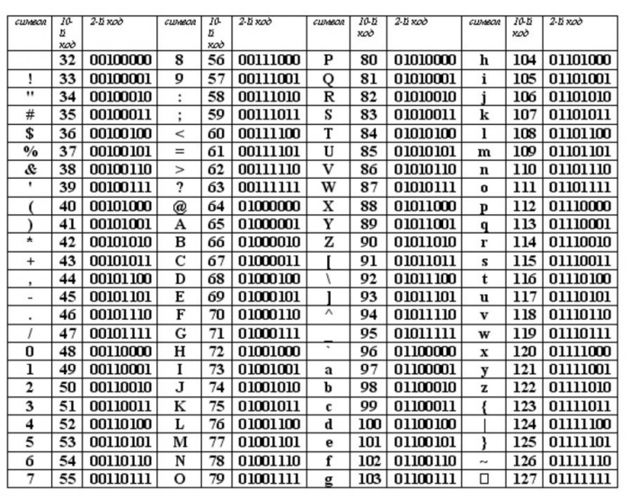
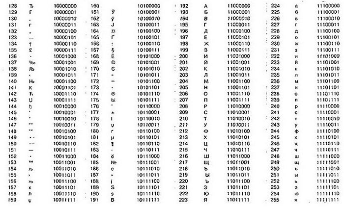

Урок 6. Единицы измерения информации
Перечень рассматриваемых вопросов:
- Алфавитный подход к измерению информации.
- Наименьшая единица измерения информации.
- Информационный вес одного символа алфавита и информационный объём всего сообщения.
- Единицы измерения информации.
Тезаурус:
Каждый символ информационного сообщения несёт фиксированное количество информации.
Единицей измерения количества информации является бит – это наименьшая единица.
1 байт = 8 бит
1 Кб (килобайт) = 1024 байта= 210 байтов
1 Мб (мегабайт) = 1024 Кб = 210 Кб
1 Гб (гигабайт) = 1024 Мб = 210 Мб
1 Тб (терабайт) =1024 Гб = 210 Гб
Формулы, которые используются при решении типовых задач:
Информационный вес символа алфавита и мощность алфавита связаны между собой соотношением: N = 2i.
Информационный объём сообщения определяется по формуле: I = К · i,
I – объём информации в сообщении;
К – количество символов в сообщении;
i – информационный вес одного символа.
Теоретический материал для самостоятельного изучения
Любое сообщение несёт некоторое количество информации. Как же его измерить?
Одним из способов измерения информации является алфавитный подход, который говорит о том, что каждый символ любого сообщения имеет определённый информационный вес, то есть несёт фиксированное количество информации.
Сегодня на уроке мы узнаем, чему равен информационный вес одного символа и научимся определять информационный объём сообщения.
Что же такое символ в компьютере? Символом в компьютере является любая буква, цифра, знак препинания, специальный символ и прочее, что можно ввести с помощью клавиатуры. Но компьютер не понимает человеческий язык, он каждый символ кодирует. Вся информация в компьютере представляется в виде нулей и единичек. И вот эти нули и единички называются битом.
Информационный вес символа двоичного алфавита принят за минимальную единицу измерения информации и называется один бит.
Алфавит любого понятного нам языка можно заменить двоичным алфавитом. При этом мощность исходного алфавита связана с разрядностью двоичного кода соотношением: N = 2i.
Эту формулу можно применять для вычисления информационного веса одного символа любого произвольного алфавита.
Рассмотрим пример:
Алфавит древнего племени содержит 16 символов. Определите информационный вес одного символа этого алфавита.
Составим краткую запись условия задачи и решим её:
Дано:
N=16, i = ?
Решение:
N = 2i
16 = 2i, 24 = 2i, т. е. i = 4
Ответ: i = 4 бита.
Информационный вес одного символа этого алфавита составляет 4 бита.
Сообщение состоит из множества символов, каждый из которых имеет свой информационный вес. Поэтому, чтобы вычислить объём информации всего сообщения, нужно количество символов, имеющихся в сообщении, умножить на информационный вес одного символа.
Математически это произведение записывается так: I = К · i.
Например: сообщение, записанное буквами 32-символьного алфавита, содержит 180 символов. Какое количество информации оно несёт?
Дано:
N=32
K = 180,
I= ?
Решение:
I = К · i,
N = 2i
32 = 2i, 25 = 2i, т. е. i = 5,
I = 180 · 5 = 900 бит.
Ответ: i = 900 бит.
Итак, информационный вес всего сообщения равен 900 бит.
В алфавитном подходе не учитывается содержание самого сообщения. Чтобы вычислить объём содержания в сообщении, нужно знать количество символов в сообщении, информационный вес одного символа и мощность алфавита. То есть, чтобы определить информационный вес сообщения: «сегодня хорошая погода», нужно сосчитать количество символов в этом сообщении и умножить это число на восемь.
I = 23 · 8 = 184 бита.
Значит, сообщение весит 184 бита.
Как и в математике, в информатике тоже есть кратные единицы измерения информации. Так, величина равная восьми битам, называется байтом.
Бит и байт – это мелкие единицы измерения. На практике для измерения информационных объёмов используют более крупные единицы: килобайт, мегабайт, гигабайт и другие.
1 байт = 8 бит
1 Кб (килобайт) = 1024 байта= 210 байтов
1 Мб (мегабайт) = 1024 Кб = 210 Кб
1 Гб (гигабайт) = 1024 Мб = 210 Мб
1 Тб (терабайт) =1024 Гб = 210 Гб
Итак, сегодня мы узнали, что собой представляет алфавитный подход к измерению информации, выяснили, в каких единицах измеряется информация и научились определять информационный вес одного символа и информационный объём сообщения.
Материал для углубленного изучения темы.
Как текстовая информация выглядит в памяти компьютера.
Набирая текст на клавиатуре, мы видим привычные для нас знаки (цифры, буквы и т.д.). В оперативную память компьютера они попадают только в виде двоичного кода. Двоичный код каждого символа, выглядит восьмизначным числом, например 00111111. Теперь возникает вопрос, какой именно восьмизначный двоичный код поставить в соответствие каждому символу?
Все символы компьютерного алфавита пронумерованы от 0 до 255. Каждому номеру соответствует восьмиразрядный двоичный код от 00000000 до 11111111. Этот код ‑ просто порядковый номер символа в двоичной системе счисления.
Таблица, в которой всем символам компьютерного алфавита поставлены в соответствие порядковые номера, называется таблицей кодировки.Таблица для кодировки – это «шпаргалка», в которой указаны символы алфавита в соответствии порядковому номеру. Для разных типов компьютеров используются различные таблицы кодировки.
Таблица ASCII (или Аски), стала международным стандартом для персональных компьютеров. Она имеет две части.

В этой таблице латинские буквы (прописные и строчные) располагаются в алфавитном порядке. Расположение цифр также упорядочено по возрастанию значений. Это правило соблюдается и в других таблицах кодировки и называется принципом последовательного кодирования алфавитов. Благодаря этому понятие «алфавитный порядок» сохраняется и в машинном представлении символьной информации. Для русского алфавита принцип последовательного кодирования соблюдается не всегда.
Запишем, например, внутреннее представление слова «file». В памяти компьютера оно займет 4 байта со следующим содержанием:
01100110 01101001 01101100 01100101.
А теперь попробуем решить обратную задачу. Какое слово записано следующим двоичным кодом:
01100100 01101001 01110011 01101011?
В таблице 2 приведен один из вариантов второй половины кодовой таблицы АSСII, который называется альтернативной кодировкой. Видно, что в ней для букв русского алфавита соблюдается принцип последовательного кодирования.

Вывод: все тексты вводятся в память компьютера с помощью клавиатуры. На клавишах написаны привычные для нас буквы, цифры, знаки препинания и другие символы. В оперативную память они попадают в форме двоичного кода.
Из памяти же компьютера текст может быть выведен на экран или на печать в символьной форме.
Сейчас используют целых пять систем кодировок русского алфавита (КОИ8-Р, Windows, MS-DOS, Macintosh и ISO). Из-за количества систем кодировок и отсутствия одного стандарта, очень часто возникают недоразумения с переносом русского текста в компьютерный его вид. Поэтому, всегда нужно уточнять, какая система кодирования установлена на компьютере.